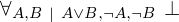

Proof of proveit.logic.boolean.disjunction.leftIfNotRight theorem¶
In [1]:
import proveit
from proveit import defaults
from proveit._common_ import A, B
from proveit.logic import inBool, Not, Or
from proveit.logic.boolean.implication._theorems_ import affirmViaContradiction
context = proveit.Context('..') # the theorem's context is in the parent directory
In [2]:
%proving leftIfNotRight presuming [affirmViaContradiction]
Out[2]:
In [3]:
defaults.assumptions = [inBool(A), inBool(B), Or(A, B), Not(A), Not(B)]
Out[3]:
defaults.assumptions: 
In [4]:
AorB = Or(A, B)
Out[4]:
AorB: 
In [5]:
AorB.affirmViaContradiction(A) # prove A via contradiction
Out[5]:
 ⊢
⊢ 
In [6]:
%qed
Out[6]:
| step type | requirements | statement | ||
|---|---|---|---|---|
| 0 | generalizaton | 1 | ⊢ | |
| 1 | specialization | 2, 3, 4 | ⊢ | |
| : | ||||
| 2 | theorem | ⊢  | ||
| proveit.logic.boolean.implication.affirmViaContradiction | ||||
| 3 | assumption |  ⊢ ⊢  | ||
| 4 | hypothetical reasoning | 5 |  ⊢ ⊢  | |
| 5 | specialization | 6, 7, 8, 9 |  ⊢ ⊢  | |
: ,  : : | ||||
| 6 | theorem | ⊢  | ||
| proveit.logic.boolean.disjunction.binaryOrContradiction | ||||
| 7 | assumption |  ⊢ ⊢ | ||
| 8 | assumption |  ⊢ ⊢  | ||
| 9 | assumption |  ⊢ ⊢  | ||